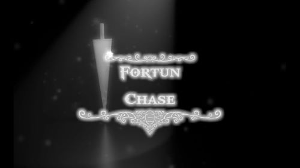
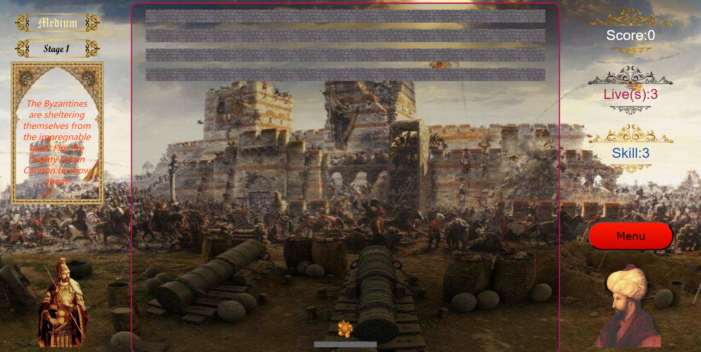

The town of Fortun, named after "fortune", was enveloped by a sense of tension. After 30 years' silence, the biggest four gangster families decided to claim the rulership of this rich town on the boundary. Will you lead them to a glorious new chapter?
BookletPosterTrailer

In the spring of 1453, hundreds of thousands of Ottoman soldiers under the command of Mehmed II were besieging Constantinople, the last bastion of Byzantines. Victory seemed to be within reach, but the impregnable gate of Constantinople held the Ottomans back and left them daunted.
Booklet
